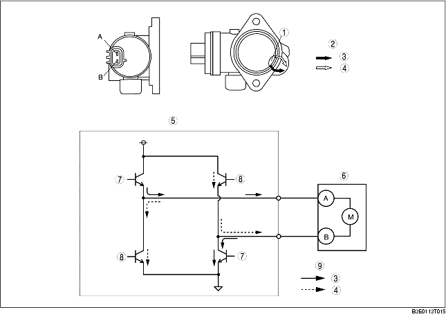

• The shutter valve actuator is mainly composed of a DC motor and gear.
• The variable intake-air shutter valve opens and closes by the operation of the motor activated by the PCM. Operation of the motor via activated directional switching switches the variable intake-air shutter valve in the direction of open or closed.
• The variable intake-air shutter valve opens and closes by the operation of the motor activated by the PCM. Operation of the motor via activated directional switching switches the variable intake-air shutter valve in the direction of open or closed.
• When 12 V is applied to the variable intake-air shutter valve actuator terminal A, the gear moves counterclockwise and the variable intake-air shutter valve opens. Conversely, when 12 V is applied to the variable intake-air shutter valve actuator terminal B, the gear moves clockwise and the variable intake-air shutter valve closes.
|
12 V terminal
|
Gear rotation direction
|
Shutter valve operation
|
|---|---|---|
|
A
|
Counterclockwise
|
Close→ Open
|
|
B
|
Clockwise
|
Open→ Close
|

.